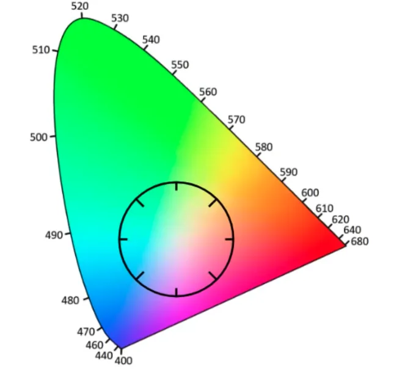
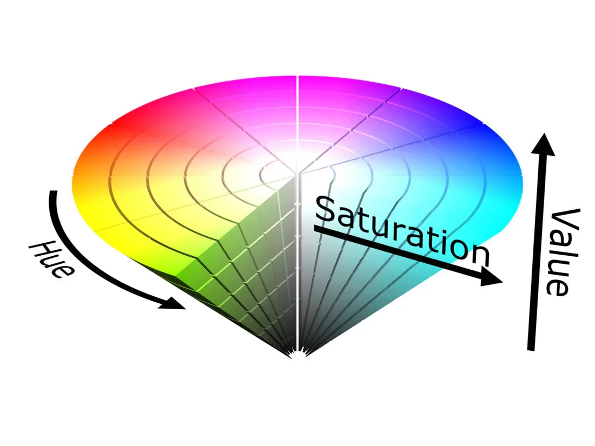

HSV
RGB 虽然从颜色组成原理上有很好的解释，但我们调整颜色时想进行某个维度的掉整比如提升亮度，改变色调，RGB 三维度的“缠绕”关系让人很难理解，这就促成了从人类感官视角HSV。[1]
- H（Hue）：色相。比如：红黄蓝。
- S（Saturation）：饱和度。比如，低饱和度的莫兰迪色系，就是往纯色里边掺“灰”。
- V（Value， Lightness， Brightness）：明度。顾名思义，就是亮度。
HSV 色彩空间的 Hue 可以理解成 RGB 中间的白色向四周画一个圆。

The Amazing Math behind Colors!
[2]
RGB 到 HSV 是非线性的变换
$$
\begin{aligned} \min &= \min(R,G,B)\\V&=max=\max(R,G,B)\\S&=(\max-\min)/\max\\H&=60\cdot \begin{cases}0+(G-B)/(\max-\min),if \max=R\\2+(B-R)/(\max-\min),if \max=G\\4+(R-G)/(\max-\min),if \max=B\\\end{cases}\\H&=H+360, if H<0 \end{aligned}
$$
至此，我们的到了 HSV。

[3]
Reference
- https://en.wikipedia.org/wiki/HSL_and_HSV#Motivation
- https://www.youtube.com/watch?v=gnUYoQ1pwes
- https://hyperskill.org/learn/step/13179